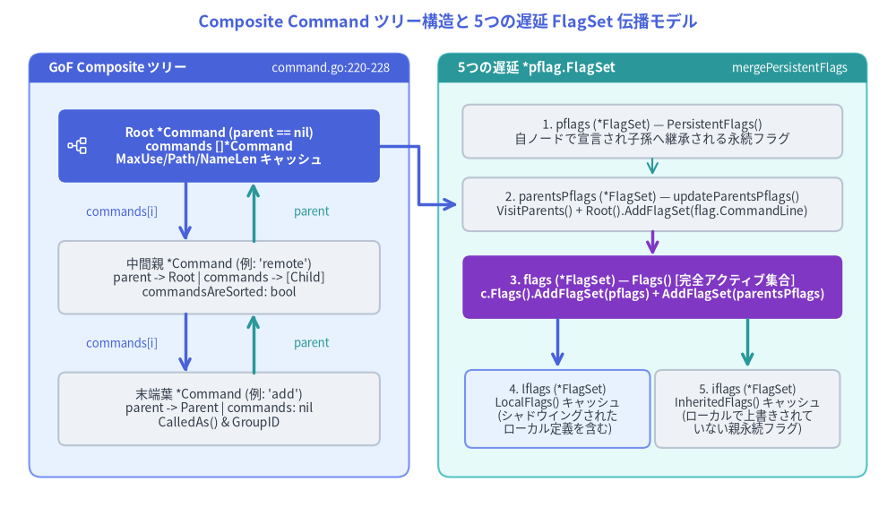
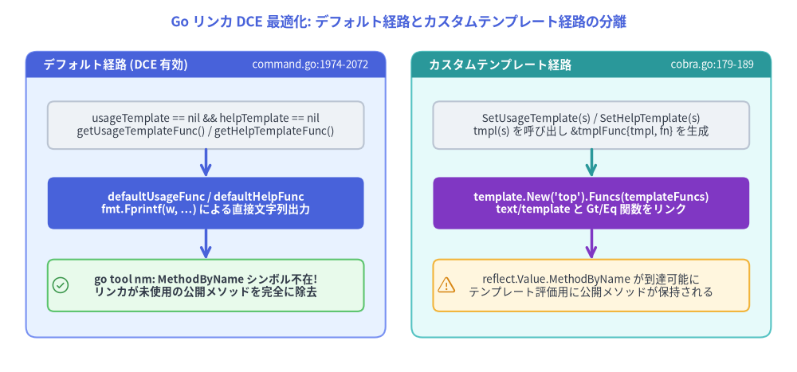

複合 Command ツリー構造と FlagSet 遅延初期化の内部設計
Cobra は CLI アプリケーション全体（ルートバイナリ、ネストされたサブコマンド階層、ヘルプトピック、フラグスコープ）を単一の自己参照構造体 cobra.Command（command.go:54–260）で表現します。「RootApp」「CommandGroup」「LeafAction」を別々の Go 型に分割するのではなく、Command 単一型で GoF (Gang of Four) Composite パターン を実装し、さらに 5つの遅延初期化 *pflag.FlagSet ポインタ と Go リンカのデッドコード除去（TestDeadcodeElimination）を維持するリフレクション不要のデフォルト描画関数 を組み合わせています。

Source Code
from drawlib.canvas import save, setup
from drawlib.icons import phosphor
from drawlib.lines import line, lines
from drawlib.shapes import rectangle
from drawlib.smartarts import Panel
from drawlib.styles import Styles
from drawlib.text import text
setup(width=184, height=106)
text(
(92, 101.5),
"Composite Command ツリー構造と 5つの遅延 FlagSet 伝播モデル",
style=Styles.PrimaryBold.patch(text_size=13.0),
)
# Left Panel: GoF Composite Tree Topology
Panel(
"GoF Composite ツリー",
"command.go:220-228",
style=Styles.PrimaryNeutral,
header_style=Styles.PrimaryFlat,
text_style=Styles.WhiteBold.patch(text_size=10.5),
description_style=Styles.White.patch(text_size=9.5),
header_height=6.0,
).draw((6, 8), width=78, height=87)
rectangle(
(45, 76),
width=66,
height=15,
style=Styles.PrimaryFlat.patch(shape_r=1.5),
text="Root *Command (parent == nil)\ncommands []*Command\nMaxUse/Path/NameLen キャッシュ",
text_style=Styles.WhiteBold.patch(text_size=10.0),
)
phosphor.tree_structure((16, 76), width=4.5, style=Styles.White)
rectangle(
(45, 49),
width=66,
height=15,
style=Styles.Neutral.patch(shape_r=1.5),
text="中間親 *Command (例: 'remote')\nparent -> Root | commands -> [Child]\ncommandsAreSorted: bool",
text_style=Styles.Dark.patch(text_size=10.0),
)
rectangle(
(45, 22),
width=66,
height=15,
style=Styles.Neutral.patch(shape_r=1.5),
text="末端葉 *Command (例: 'add')\nparent -> Parent | commands: nil\nCalledAs() & GroupID",
text_style=Styles.Dark.patch(text_size=10.0),
)
# Bidirectional parent / commands pointers
line((38, 68.5), (38, 56.5), arrow_head="->", style=Styles.PrimaryBold)
text((25, 62.5), "commands[i]", style=Styles.Primary.patch(text_size=9.5))
line((52, 56.5), (52, 68.5), arrow_head="->", style=Styles.SecondaryBold)
text((64, 62.5), "parent", style=Styles.Secondary.patch(text_size=9.5))
line((38, 41.5), (38, 29.5), arrow_head="->", style=Styles.PrimaryBold)
text((25, 35.5), "commands[i]", style=Styles.Primary.patch(text_size=9.5))
line((52, 29.5), (52, 41.5), arrow_head="->", style=Styles.SecondaryBold)
text((64, 35.5), "parent", style=Styles.Secondary.patch(text_size=9.5))
# Right Panel: 5 Lazy *pflag.FlagSet Pointers & mergePersistentFlags()
Panel(
"5つの遅延 *pflag.FlagSet",
"mergePersistentFlags",
style=Styles.SecondaryNeutral,
header_style=Styles.SecondaryFlat,
text_style=Styles.WhiteBold.patch(text_size=10.5),
description_style=Styles.White.patch(text_size=9.5),
header_height=6.0,
).draw((90, 8), width=88, height=87)
rectangle(
(134, 79),
width=78,
height=11,
style=Styles.Neutral.patch(shape_r=1.5),
text="1. pflags (*FlagSet) — PersistentFlags()\n自ノードで宣言され子孫へ継承される永続フラグ",
text_style=Styles.Dark.patch(text_size=9.8),
)
rectangle(
(134, 64),
width=78,
height=11,
style=Styles.Neutral.patch(shape_r=1.5),
text="2. parentsPflags (*FlagSet) — updateParentsPflags()\nVisitParents() + Root().AddFlagSet(flag.CommandLine)",
text_style=Styles.Dark.patch(text_size=9.8),
)
rectangle(
(134, 47),
width=78,
height=13,
style=Styles.AccentFlat.patch(shape_r=1.5),
text="3. flags (*FlagSet) — Flags() [完全アクティブ集合]\nc.Flags().AddFlagSet(pflags) + AddFlagSet(parentsPflags)",
text_style=Styles.WhiteBold.patch(text_size=9.8),
)
rectangle(
(114.5, 22),
width=38,
height=16,
style=Styles.PrimaryNeutral.patch(shape_r=1.5),
text="4. lflags (*FlagSet)\nLocalFlags() キャッシュ\n(シャドウイングされた\nローカル定義を含む)",
text_style=Styles.Dark.patch(text_size=9.5),
)
rectangle(
(153.5, 22),
width=38,
height=16,
style=Styles.Neutral.patch(shape_r=1.5),
text="5. iflags (*FlagSet)\nInheritedFlags() キャッシュ\n(ローカルで上書きされて\nいない親永続フラグ)",
text_style=Styles.Dark.patch(text_size=9.5),
)
line((134, 73.5), (134, 70), arrow_head="->", style=Styles.Secondary)
line((134, 58.5), (134, 53.5), arrow_head="->", style=Styles.AccentBold)
line((114.5, 40.5), (114.5, 30.5), arrow_head="->", style=Styles.PrimaryBold)
line((153.5, 40.5), (153.5, 30.5), arrow_head="->", style=Styles.SecondaryBold)
lines([(78, 76), (86, 76), (86, 64), (94, 64)], arrow_head="->", style=Styles.PrimaryBold)
save()
1. cobra.Command における GoF Composite パターン実装
command.go:220–228 において、すべての Command インスタンスは親方向・子方向の双方向ツリーポインタと、ヘルプ整形用の最大文字列長キャッシュを保持しています。
// command.go:210-228
commandsAreSorted bool
commandCalledAs struct {
name string
called bool
}
ctx context.Context
commands []*Command // 子サブコマンドのスライス
parent *Command // 親コマンドへの上向きポインタ（Root では nil）
commandsMaxUseLen int
commandsMaxCommandPathLen int
commandsMaxNameLen int
1.1 ツリー変更時の不変条件（AddCommand, RemoveCommand, ResetCommands）
c.AddCommand(cmds ...*Command)（command.go:1342–1368）によってサブコマンドが追加される際、Cobra は以下の4つの不変条件を維持します。
- 自己挿入（サイクル）防止ガード (
command.go:1344–1346):- ポインタ変更前に
if cmds[i] == c { panic("Command can't be a child of itself") }を検査し、Root()やVisitParents()での無限再帰サイクルを未然に防ぎます。
- ポインタ変更前に
- 親ポインタ設定とパディング幅キャッシュの更新 (
command.go:1347–1360):cmds[i].parent = cを設定した直後に、親コマンドc上の3つの最大長キャッシュを更新します。commandsMaxUseLen = max(commandsMaxUseLen, len(x.Use))commandsMaxCommandPathLen = max(commandsMaxCommandPathLen, len(x.CommandPath()))commandsMaxNameLen = max(commandsMaxNameLen, len(x.Name()))
x.CommandPath()（command.go:1465–1470）はc.Parent().CommandPath() + " " + c.Name()をルート（c.DisplayName()）まで再帰結合するため、cmds[i].parent = cの設定後に呼び出すことで正確なフルパス長が求まります。- ヘルプ表示時には
UsagePadding(),CommandPathPadding(),NamePadding()（command.go:560–588）が最小パディング定数（minUsagePadding = 25,minCommandPathPadding = 11,minNamePadding = 11）と比較し、rpad(s, padding)（cobra.go:174–177）へ渡します。
- グローバル正規化関数のカスケード伝播 (
command.go:1362–1364):- 親に
c.globNormFunc != nilが設定されている場合、x.SetGlobalNormalizationFunc(c.globNormFunc)（command.go:382–390）を呼び出し、追加されたサブツリー全体へ正規化関数を伝播させます。
- 親に
- サブコマンドスライスの遅延ソート (
command.go:1332–1339, 1366):AddCommandはc.commandsの末尾にxを追加し、c.commandsAreSorted = falseをマークするだけです。- 実際のソートは
c.Commands()が呼ばれた時点まで遅延されます。EnableCommandSorting（cobra.go:59、デフォルトtrue）が有効かつ!c.commandsAreSortedの場合のみ、sort.Sort(commandSorterByName(c.commands))（command.go:1325–1337）がインプレースで実行され、c.commandsAreSorted = trueとなります。
一方、c.RemoveCommand(cmds ...*Command)（command.go:1401–1432）は削除対象の command.parent = nil をクリアしてスライスを再構築し、残った子コマンド群から3つの最大長キャッシュ（commandsMaxUseLen 等）をゼロから再計算します。
1.2 親方向ツリー走査と設定継承メソッド
入出力ストリームやカスタムヘルプ関数などは通常ルートコマンドにのみ設定されるため、各ゲッターは parent ポインタをルート方向へ辿って設定値を探索します。
| メソッド | ソース行 (command.go) |
走査方向とフォールバック動作 |
|---|---|---|
c.Root() |
L892–897 |
!c.HasParent() になるまで c.Parent().Root() を再帰呼び出しし、最上位ノードを返す。 |
c.VisitParents(fn) |
L884–889 |
直近の親からルートまで順番に fn(c.Parent()) を呼び出す。 |
c.CommandPath() |
L1465–1470 |
c.Parent().CommandPath() + " " + c.Name() を再帰連結（Root は c.DisplayName()）。 |
c.getOut(def) / getErr / getIn |
L412–440 |
c.outWriter (errWriter, inReader) が nil なら c.parent を辿り、未設定時は os.Stdout / os.Stderr / os.Stdin を返す。 |
c.UsageFunc() / HelpFunc() / FlagErrorFunc() |
L444–558 |
自ノードに関数が未設定なら c.Parent() へ委譲し、最上位で defaultUsageFunc / defaultHelpFunc を返す。 |
c.ErrPrefix() |
L643–652 |
c.errPrefix が空なら c.parent.ErrPrefix() を辿り、デフォルト "Error:" を返す。 |
2. 5つの遅延初期化 *pflag.FlagSet ポインタと mergePersistentFlags()
&cobra.Command{Use: "..."} を生成した時点では、pflag.FlagSet は1つもアロケートされません。Command 構造体は5つの *flag.FlagSet ポインタ（command.go:155–166）とエラー出力バッファ flagErrorBuf *bytes.Buffer（command.go:154）を保持し、オンデマンドで初期化・マージを行います。
| フィールド | 公開アクセサ | 遅延初期化とフラグ統合アルゴリズム (command.go:1688–1923) |
|---|---|---|
flags |
c.Flags() (L1688–1698) |
c.ParseFlags(args) で実際にパースされる 完全フラグ集合。初回呼び出し時に flag.NewFlagSet(c.DisplayName(), flag.ContinueOnError) で生成され、mergePersistentFlags() 実行後はローカルフラグ + pflags + parentsPflags を保持する。 |
pflags |
c.PersistentFlags() (L1775–1784) |
このコマンド自身で宣言された永続フラグ集合。初回アクセス時に生成され、自コマンドおよび全子孫コマンドへ継承される。 |
parentsPflags |
(内部) c.updateParentsPflags() (L1907–1923) |
すべての祖先コマンドの永続フラグを集約するキャッシュ（SortFlags = false）。c.Root().PersistentFlags().AddFlagSet(flag.CommandLine) で標準 pflag.CommandLine を取り込んだ上で、c.VisitParents により全祖先の PersistentFlags() を集約する。 |
lflags |
c.LocalFlags() / c.NonInheritedFlags() (L1716–1740, 1770) |
自コマンド固有のフラグ（ローカルフラグ＋自ノードの pflags）の 読み取りビューキャッシュ。f != c.parentsPflags.Lookup(f.Name)（ポインタ比較）を条件とすることで、親の永続フラグと同名で上書き（シャドウイング）されたローカルフラグも正しくローカル側へ含める。 |
iflags |
c.InheritedFlags() (L1744–1766) |
親から継承されたフラグの 読み取りビューキャッシュ。c.parentsPflags を走査し、local.Lookup(f.Name) == nil（ローカルでシャドウイングされていないもの）のみを追加する。 |
[!IMPORTANT]
LocalFlags()とLocalNonPersistentFlags()の決定的な違い:c.LocalFlags()（および別名c.NonInheritedFlags()）には自コマンドで定義したPersistentFlags()も含まれますが、c.LocalNonPersistentFlags()（command.go:1702–1712）は新しいFlagSetを割り当て、c.PersistentFlags().Lookup(f.Name) == nilの純粋な非永続ローカルフラグのみを抽出します。Shell Completion V2 エンジン（completions.go:504）は、TraverseChildren == falseの際に非永続ローカルフラグが指定済みかどうかを判定するためにこのメソッドを使用します。
2.1 mergePersistentFlags() による3段階の優先順位保証
ユーザーが init() 内で rootCmd.PersistentFlags().StringP(...) を定義した時点では、子コマンドはまだ AddCommand されていない可能性があります。そのため Cobra は事前プッシュを行わず、ParseFlags・stripFlags・Help・MarkFlags* の直前に c.mergePersistentFlags()（command.go:1898–1923）を呼び出して親からプルします。
// command.go:1898-1923
func (c *Command) mergePersistentFlags() {
c.updateParentsPflags()
c.Flags().AddFlagSet(c.PersistentFlags())
c.Flags().AddFlagSet(c.parentsPflags)
}
func (c *Command) updateParentsPflags() {
if c.parentsPflags == nil {
c.parentsPflags = flag.NewFlagSet(c.DisplayName(), flag.ContinueOnError)
c.parentsPflags.SetOutput(c.flagErrorBuf)
c.parentsPflags.SortFlags = false
}
if c.globNormFunc != nil {
c.parentsPflags.SetNormalizeFunc(c.globNormFunc)
}
c.Root().PersistentFlags().AddFlagSet(flag.CommandLine)
c.VisitParents(func(parent *Command) {
c.parentsPflags.AddFlagSet(parent.PersistentFlags())
})
}
pflag.FlagSet.AddFlagSet() は、すでに同名フラグが存在する場合は上書きせず無視する仕様であるため、以下の 3段階の優先順位（シャドウイング規則） が自動的に成立します。
- ローカルフラグ (
c.Flags()) が最優先。 - 自コマンドの永続フラグ (
c.PersistentFlags()) が第2優先。 - 直近の親からルートへ遡る永続フラグ (
c.parentsPflags) が第3優先（VisitParentsが直近の親から順に走査するため、より近い親の永続フラグが遠い祖先の同名フラグより優先されます）。
3. Go リンカのデッドコード除去（DCE）を守る tmplFunc と defaultUsageFunc
command.go と cobra.go における最も巧妙な最適化の1つが、カスタム text/template 機能（SetUsageTemplate, SetHelpTemplate, SetVersionTemplate）をサポートしつつ、デフォルト構成の CLI バイナリにおいて Go リンカのデッドコード除去（Deadcode Elimination: DCE）を有効に保つ設計 です。

Source Code
from drawlib.canvas import save, setup
from drawlib.icons import phosphor
from drawlib.lines import line
from drawlib.shapes import rectangle
from drawlib.smartarts import Panel
from drawlib.styles import Styles
from drawlib.text import text
setup(width=184, height=86)
text(
(92, 81),
"Go リンカ DCE 最適化: デフォルト経路とカスタムテンプレート経路の分離",
style=Styles.PrimaryBold.patch(text_size=12.5),
)
# Left Panel: Default Fast Path (DCE Preserved)
Panel(
"デフォルト経路 (DCE 有効)",
"command.go:1974-2072",
style=Styles.PrimaryNeutral,
header_style=Styles.PrimaryFlat,
text_style=Styles.WhiteBold.patch(text_size=10.5),
description_style=Styles.White.patch(text_size=9.5),
header_height=6.0,
).draw((6, 8), width=83, height=66)
rectangle(
(47.5, 57),
width=73,
height=11,
style=Styles.Neutral.patch(shape_r=1.5),
text="usageTemplate == nil && helpTemplate == nil\ngetUsageTemplateFunc() / getHelpTemplateFunc()",
text_style=Styles.Dark.patch(text_size=9.8),
)
rectangle(
(47.5, 39),
width=73,
height=12,
style=Styles.PrimaryFlat.patch(shape_r=1.5),
text="defaultUsageFunc / defaultHelpFunc\nfmt.Fprintf(w, ...) による直接文字列出力",
text_style=Styles.WhiteBold.patch(text_size=10.0),
)
rectangle(
(47.5, 20),
width=73,
height=12,
style=Styles.SuccessNeutral.patch(shape_r=1.5),
text="go tool nm: MethodByName シンボル不在!\nリンカが未使用の公開メソッドを完全に除去",
text_style=Styles.DarkBold.patch(text_size=9.8),
)
phosphor.check_circle((14, 20), width=4.5, style=Styles.Success)
line((47.5, 51.5), (47.5, 45), arrow_head="->", style=Styles.PrimaryBold)
line((47.5, 33), (47.5, 26), arrow_head="->", style=Styles.PrimaryBold)
# Right Panel: Custom Template Path (Reflection Linked)
Panel(
"カスタムテンプレート経路",
"cobra.go:179-189",
style=Styles.SecondaryNeutral,
header_style=Styles.SecondaryFlat,
text_style=Styles.WhiteBold.patch(text_size=10.5),
description_style=Styles.White.patch(text_size=9.5),
header_height=6.0,
).draw((95, 8), width=83, height=66)
rectangle(
(136.5, 57),
width=73,
height=11,
style=Styles.Neutral.patch(shape_r=1.5),
text="SetUsageTemplate(s) / SetHelpTemplate(s)\ntmpl(s) を呼び出し &tmplFunc{tmpl, fn} を生成",
text_style=Styles.Dark.patch(text_size=9.8),
)
rectangle(
(136.5, 39),
width=73,
height=12,
style=Styles.AccentFlat.patch(shape_r=1.5),
text="template.New('top').Funcs(templateFuncs)\ntext/template と Gt/Eq 関数をリンク",
text_style=Styles.WhiteBold.patch(text_size=10.0),
)
rectangle(
(136.5, 20),
width=73,
height=12,
style=Styles.WarningNeutral.patch(shape_r=1.5),
text="reflect.Value.MethodByName が到達可能に\nテンプレート評価用に公開メソッドが保持される",
text_style=Styles.Dark.patch(text_size=9.8),
)
phosphor.warning((103, 20), width=4.5, style=Styles.Warning)
line((136.5, 51.5), (136.5, 45), arrow_head="->", style=Styles.SecondaryBold)
line((136.5, 33), (136.5, 26), arrow_head="->", style=Styles.AccentBold)
save()
3.1 なぜ text/template がリンカの DCE を阻害するのか
Go のリンカ（cmd/link）は main.main() から到達可能性解析を行い、参照されない関数やメソッドをバイナリから削除します。しかし、コールグラフ内のどこかで reflect.Value.MethodByName または reflect.Value.Method が到達可能になると、リンカは「実行時にどの文字列名でメソッドが呼ばれるか静的に証明できない」ため、到達可能な型に属するすべてのエクスポート済みメソッドをバイナリに残してしまいます。
標準パッケージ text/template は {{.UseLine}} のようなフィールド・メソッド参照を reflect.Value.MethodByName で動的解決するため、もし Cobra のデフォルト --help 経路が text/template を直接実行してしまうと、すべての Cobra 製 CLI バイナリで DCE が無効化されてしまいます。
3.2 tmplFunc ラッパーと defaultUsageFunc の同期設計
この問題を解決するため（PR #1956、cobra_test.go:245–301 の TestDeadcodeElimination）、Cobra は2段構えの分離を採用しています。
tmplFuncクロージャラッパー (command.go:1937–1940,cobra.go:179–189):CommandのusageTemplate,helpTemplate,versionTemplateフィールドは*template.Templateではなく*tmplFunc型を持ちます。type tmplFunc struct { tmpl string fn func(io.Writer, interface{}) error }- 実際に
template.New("top").Funcs(templateFuncs)とt.Execute(w, data)を呼び出すtmpl(text string) *tmplFunc関数（cobra.go:179–189）は、SetUsageTemplate,SetHelpTemplate,SetVersionTemplate（command.go:318–373）の内部からしか参照されません。
- 純粋な
fmt.Fprintfによるデフォルト描画関数 (command.go:1974–2072):- カスタムテンプレートが未設定（
nil）の場合、getUsageTemplateFunc()（command.go:464–473）はdefaultUsageFunc（command.go:1974–2040）を返します。この関数はdefaultUsageTemplate（command.go:1942–1971）と1バイト単位で同一の出力をfmt.Fprintfのみで生成します。 - 同様に、
getHelpTemplateFunc()はdefaultHelpFunc（command.go:2047–2062）を、getVersionTemplateFunc()はdefaultVersionFunc（command.go:2068–2072）を返します。 TestDeadcodeElimination（cobra_test.go:245–301）は、デフォルト構成の Cobra プログラムをgo buildし、go tool nmのシンボル一覧に"MethodByName"が含まれていないことを自動検証しています。
- カスタムテンプレートが未設定（
次のステップ
- 第2章 — Find / Traverse と stripFlags パーサー に進み、
FlagSetの状態を変化させずに生トークン列os.Args[1:]からターゲットサブコマンドを特定するアルゴリズムを確認しましょう。 - アーキテクチャ概要トップ に戻る。